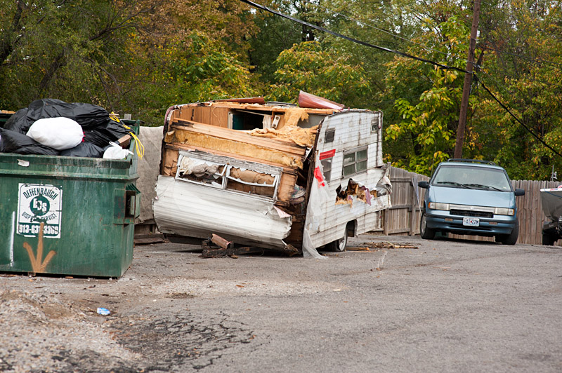
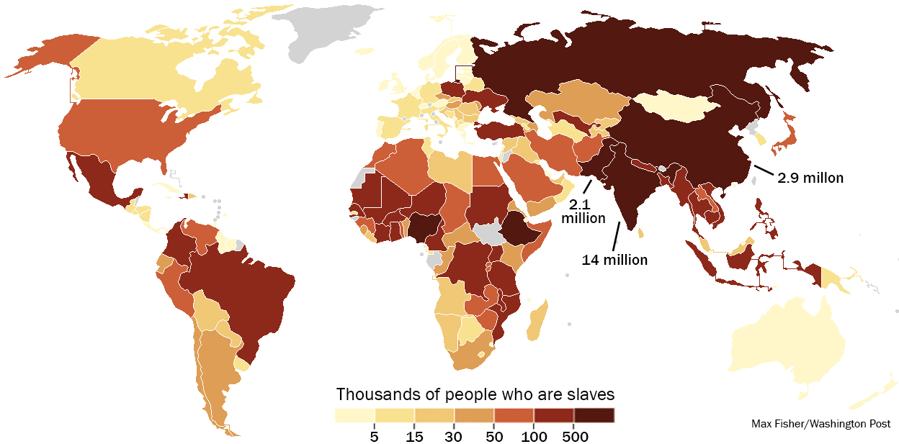

By Phillip Neel
Two years ago in Seattle, on May 1st, 2012, roughly four to five hundred people engaged in the largest riot the city had seen in more than a decade. Hundreds of thousands of dollars of property were destroyed[i], a minor state of emergency was declared, and the next day’s headlines were filled with horror stories of crazy, “out-of-town” anarchists run amok.
This event, occurring on the tail end of the Occupy movement, also quickly became the post-facto excuse for extensive federal, state and municipal investigation, surveillance and ongoing repression of political dissent. Several anarchists in the Pacific Northwest wereput in prison without charge in the fall of that year, only to be released months later, still with no charges filed. Houses were raided in search of anarchist literature and black hoodies. Up to a year later, people were still being followed.
I was one of the five people originally charged for crimes on May Day 2012[ii]. I’ve since pled guilty to slightly lesser charges, in order to avoid going to trial on two felonies[iii]. I pled in the fall of 2013 and completed the bulk of the sentence in the winter, spending three months in King County’s Work-Education Release (WER) Unit. Technically an “alternative to confinement,” living in WER effectively means that you are imprisoned at all times that you are not allowed out for work, school or treatment (for mental health or drug offenses).
This puts me in a unique position. Since I am one of the few people who has pled guilty to certain crimes from May 1st, 2012, including Riot, I do not necessarily face the same risks in talking about—and defending—the riot as a tactic or the impulses behind it. This by no means makes what I say below an exhaustive or fully representative account of why others may have engaged in that same riot. They mostly got away—a good thing in and of itself, though federal charges may still be pending for one window that was smashed in an empty courthouse. But this also means that they cannot speak of or defend their participation without risking repression.
To be clear: I’m not speaking on behalf of any groups who wound up engaged in the riot that occurred on May Day 2012. To my knowledge, the riot was by no means planned ahead of time, and the anti-capitalist march that the riot grew out of, technically an Occupy Seattle event, was itself planned in public meetings. I’m not even speaking on behalf of this specific riot, but instead on behalf of rioting as such, in the abstract. The question “Why Riot” is not simply: why did you engage in this riot, but, instead, why riot at all? And the perspective given here is that of a rioter.
So I’m writing here for simple reasons: to defend the riot as a general tactic and to explain why one might engage in a riot. By this I mean to defend and explain not just the window breaking, not just “non-injurious violence,” and certainly not just the media spectacle it generates, but the riot itself—that dangerous, ugly word that sounds so basically criminal and which often takes (as in London in 2011) a form so fundamentally unpalatable for civil society that it can only be understood as purely irrational, without any logic, and without possible defense.
I aim, nonetheless, to defend and explain the riot, because we live in a new era of riots. Riots have been increasing in absolute number globally for the past thirty years. They are our immediate future, and this future will spare Seattle no less than Athens or London, Guangzhou or Cairo.
Who am I?
I am a member of the poorest generation since those who came of age during the Great Depression. Born to the “end of history,” we watched the ecstatic growth of the Clinton years morph seamlessly into the New Normal of Bush and Obama.
We have no hope of doing better than our parents did, by almost any measure. We have inherited an economy in secular stagnation, a ruined environment on the verge of collapse, a political system created by and for the wealthy, skyrocketing inequality, and anemotionally devastating, hyper-atomized culture of pyrrhic consumption.
The most recent economic collapse has hit us the hardest. According to a study by the Pew Research Center, the median net worth of people under 35 fell 55 percent between 2005 and 2009, while those over 65 lost only a fraction as much, around 6 percent[iv]. The result is that if you calculate debt alongside income, wealth inequality is today increasingly generational. Those over 65 hold a median net worth of $170,494, an increase from 1984 of 42 percent. Meanwhile, the median net worth of those under 35 has fallen 68 percent over the same period, leaving young people today with a median worth of only $3,662[v].
Despite cultural narratives of laziness and entitlement, this differential is not due to lack of effort or education (my generation is the most educated, as well, and works some of the longest hours for the least pay). The same Pew Study notes that older white Americans have simply been the beneficiaries of good timing. They were raised in an era of cheap housing and education, massive state welfare and unprecedented economic ascent following the creative destruction of two world wars and a depression—wars and crises that they themselves didn’t have to live through.
And the jobs that older Americans hold are not being passed down to us, though their debt is. When they retire, the few remaining secure, living wage and often unionized positions will be eliminated, their components dispersed into three or four different unskilled functions performed by part-time service workers. The entirety of the job growth that has come since the “recovery” began has been in low-wage, temporary or highly precarious jobs, which exist alongside a permanently heightened unemployment rate.
In the long term, this means that, after having been roundly robbed in almost every respect by our parents’ generation, our own future holds nothing more than the hope that we might be employed in two or three separate part-time, no-promotion positions in the few growth sectors, such as healthcare, where we can have the privilege of being paid minimum wage to wipe the asses of the generation that robbed us.
It is no coincidence, then, that every time we hear a fucking baby boomer explain how we’re so entitled, and how they worked summers to pay for college, we contemplate whether or not disemboweling them and selling their organs on the booming black market might be the only way to pay back our student loans.
Where did I come from?
Meanwhile, this economic overhaul has led not only to a global reordering of where things are made, and by whom, but also to a spatial concentration of economic activity in the US.[vi] Those metropolitan regions that were capable of becoming network hubs for global logistics systems fared best, with their amalgamation of hi-tech industries and producer services. These became the urban palaces, with concentrations of “cultural capital” and redesigned downtown cores (lightly cleansed of “undesirable” populations) built to appeal to tourists and foreign dignitaries.
Beyond this, large swaths of the country were simply abandoned as wastelands, where resource extraction was either hyper-mechanized or too expensive, agricultural goods were produced under heavy government subsidy, and small urban centers were forced to compete for the most undesirable jobs in industrial farming, food processing, waste management, warehousing or the growing private prison industry. In many areas, the informal economy expanded enormously—consistent with global trends, most visible in the worldwide growth of slums.

I am from one of these wastelands where the majority of work is informal, the majority of formal industries are dirty or miserable, and where rates of poverty, unemployment, chronic disease, illiteracy, and mental illness are often two to three times the national average. Raised in a trailer several miles off a reservation in one of the poorest counties on the west coast, all of the structural shifts mentioned above were for me not academic abstractions, but living reality. I come from that part of America—the majority of it—where weed is the biggest cash crop, where kids eat Special K like it’s cereal, and where the only “revitalization” we’ve ever seen is when the abandoned factory down the street was converted into a meth lab.
And I was, due mostly to dumb luck, one of the few who was able to earn enough to pay the exit fee. Upon arrival in Seattle, despite having a degree I was fed into the lowest tiers of the labor market. Rather than being some “out-of-town” suburban youth using Seattle as a “playground,” as commentators would claim of the rioters, I was, in fact, one of the multitude of invisible workers that the city depended on—whether hauling goods to and from the port, working in the south county warehouses, cleaning downtown’s sprawling office towers, or, as in my case, working behind the kitchen door.
At the time of the riot, I was working for ten cents more than minimum wage in a wholesale kitchen in South Seattle, where we produced tens of thousands of pre-packaged sandwiches and salads for consumption in upscale city cafés and office buildings. It is not an exaggeration to say that my full-time work schedule (for the duration of Occupy Seattle, which I attended every day after morning shifts at work) amounted to me feeding hundreds of thousands of Seattleites over the several months that Occupy was a present force in the city. It’s likely, then, that those hysteric KIRO-TV commentators claiming that I was part of some “outsider” gang come from the heart of chaos (or Portland, maybe?) to fuck up Seattle have themselves regularly eaten the food that I was paid poverty wages to make.
Despite the language of post-industrial, guilt-free success common to many wealthy Seattleites’ image of themselves, the fact is that Seattle, like any other global city, relies on what is called a dual labor market[vii]. Higher tiers of skilled labor, cultural production, finance and producer services exist atop a secondary tier of less skilled, minimally compensated work in high-turnover jobs with little chance of promotion.
This creates a fundamental spatial problem within capitalism: despite the outsourcing of the dirtiest, most dangerous jobs in manufacturing and resource extraction, the rich can never entirely get away from the poor. The extension of surveillance, incarceration and deportation, the militarization of the police, and the softer counter-insurgency of philanthropy foundations[viii], social justice NGOs, conservative unions and various other poverty pimps are all methods to manage different dimensions of this problem. The riot is what happens when all these mediations fail. And in an era of crisis and austerity, such mediation becomes more and more difficult to maintain.
So in all the media’s talk of “outsiders,” “anarchists” and other terms meant to make the rioting subject opaque to those not immediately engaged in the riot, the one fact that was consistently distorted was the simplest: the thieves in the palace were, in fact, the servants.
I, the terrifying, irrational rioter, am you.
Why don’t I engage in more productive forms of protest?
The other common theme was, of course, the morality play between the “good protestor” and the “bad protestor.” The rioters somehow “infiltrated” the march. They distracted from the “real” issues. They turned “normal” people away from the day’s events, ultimately hurting attempts at reform that were already underway.
There is in this an implicit assumption that there exist “better” forms of protest, and that we rioters do not also do these things. This produces a few small ironies, as when the local alt-weekly, The Stranger, contrasted the negotiated arrest of fast food protestors, who showed their courage by standing their ground and “demanding arrest,” with the May Day rioters, who did nothing but “hide behind bandanas while hurling rocks.” The irony here was that I was myself one of those rioters and one of those fast food workers—having been involved in the fast food campaign from its inauguration, leading a walkout at my workplace in the first strike, planning segments of the intermediate actions (including the wage theft protest, though my pending riot case prevented me from being arrested there), and then briefly taking a paid position with Working Washington for two weeks leading up to the second strike.
Beyond the irony, though, there is the troublesome presumption that this highly negotiated, thoroughly controlled and largely non-threatening activism is somehow more productive in the long term. When I did engage in the fast food strikes, I did so initially as a fast food worker, and the short-term goal there was to build power among food workers in the city. Despite this, no amount of organizing for (often much-needed) reforms can get over the basic problems of reform itself, which is today equivalent to trying to take a step uphill during an avalanche—you may well complete that step, but the ground itself is moving the opposite direction.
What would have been easily achievable, relatively minor reforms in the boom era of fifty or sixty years ago, such as raising the minimum wage to match inflation, enforcing laws against wage theft, and coming up with an equitable tax system, today require herculean effort and mass mobilization, even when ninety percent of the original demand is usually sacrificed simply to show “good faith” at the negotiating table.
Why don’t I like capitalism?
There is plenty more to talk about here—which you can explore if you please. But the basic problem, cut to the size of a tweet, is thatthe economy is the name for a hostage situation in which the vast majority of the population is made dependent on a small minority through implicit threat of violence.
If we challenge the system’s capacity to infinitely accumulate more at a compounding rate, it goes into crisis—this is basic definition of crisis: when profitable growth slows, stops, or, god forbid, reverses. Whenever this accumulation is challenged, whether by contingent factors such as poor location, or intentional ones, such as a resistant populace, those who hold the power (the wealthy) will start killing hostages.
This is precisely what has been happening over the last fifty years of economic restructuring. Any regions that show significant resistance to the lowering of wages, the dismantling of social services, the export or mechanization of jobs, or the privatization of public property can easily be sacrificed. The American landscape, circa 2014, is littered with just such dead hostages: Detroit and Flint, MI, Camden, NJ, Athens, OH, Jackson, MS, the mining towns of West Virginia or northern Nevada.
The handful of cities (such as New York and Seattle) that were able to escape this fate today pride themselves on being such good hostages. The only reason they were able to survive this rigged game of neoliberal roulette was because of a mixture of sheer geographic luck (often as port cities or pre-existing financial centers) and their absolute openness to do whatever the rich wanted. Public goods were sold off at bargain basement prices, downtown cores were redesigned according to the whims of a few large interests in retail, finance and real estate, and tax money, paired with future tax exemptions, was simply handed out as bribes to big players like Nordstrom and Boeing.[ix]
If we then zoom out to the global scale, it is abundantly obvious that the currently existing economic system—which we call capitalism—is a failed one. If it ever had any grudging utility in raising general livelihoods after its mass sacrifices in war and colonization, that time has unequivocally passed. Aside from the numerous examples cited above, there are a few especially appalling illustrations. Slavery isgrowing worldwide at a rate higher than at any other time in recent history. Mechanization is set to push massive swaths of workersout of the production process entirely, even while the gains of this increase in productivity are themselves concentrated almost exclusively in the hands of the wealthy. The central role of finance and speculation in the global economy has resulted in massivespikes in global food prices, causing famines and food riots, as well as a situation in which the majority of grain in the world, to take one example, is controlled by just four companies.

Meanwhile, the bulk of the globe’s basic goods production is increasingly concentrated—both in the producer services of high-GDP metropoles like London, New York and Tokyo and in the “world’s factory” of South and Southeast Asia. The production of these goods is not only dominated by vast, low-wage retailers like Wal-Mart and Amazon, but also increasingly dictated by massive contract manufacturers like Foxconn or Yue Yuen, which concentrate their production in factory cities where the lives of migrant workers are surveilled and managed in a quasi-military fashion.
The concentration of the production process coincides with the concentration of the wealth generated by that process. Even within the old “first world,” poverty and unemployment have been on the rise since long before the most recent crisis. Greece and Spain are only the most visible signs of this trend. In the US, especially, the trend splits along racial lines. Cities and schools are resegregating, though the patterns of segregation are more complex than the redlining of the Jim Crow era. One dimension of this resegregation has been the growth of the US prison system into one of the largest the world has ever seen. Even if calculated as a percentage of population, rather than absolute number, the US today imprisons roughly the same fraction of its population as the USSR did at theheight of the gulag system—and our prison population is still on the rise.
Curable diseases are returning en masse, while new viruses are being developed at record rates in the evolutionary pressure-cooker of industrial agriculture. Each economic crisis is larger than the one preceding it, and these crises are not just “business cycles.” Or, more accurately: the so-called business cycle is simply a sine wave oscillating around a trajectory of absolute decline. And this decline, like the last major ones in the global economic system, will only be reversible through an unimaginably massive bout of creative destruction.
In the face of a collapsing environment, a hyper-volatile economic system and skyrocketing global inequality, it is simply utopian to believe that the present system can be perpetuated indefinitely without great violence. Opposition to capitalism has become an eminently practical endeavor.
But… Why riot?
Despite all of this, the riot itself may still seem an enigma. On the surface, riots appear to produce little in terms of concrete results and, when you add up the numbers, often do less actual economic damage to large business interests than, for example, blockading the port. They produce a certain spectacle, but so does Jay-Z.
In one sense, there is often a practical side to many riots, which can be far better at winning demands than negotiated attempts at reform. Despite the fact that reform itself is designed to treat symptoms rather than the disease, it’s also evident that riots are a useful tool even in reform efforts. Riots, accompanying illegal blockades, occupations and wildcat strikes, have proliferated in China’s Pearl River Delta over the past several years, and the result has been that workers there have seen an unprecedented rise in manufacturing wages, which more than doubled between 2004 and 2009. Some scholars have called the phenomenon “collective bargaining by riot.”
Similarly, more and more historical work has been emerging showing that riots and other forms of armed organizing were very much the meat of movements like the civil rights struggle in the US, despite the common perception that these things were somehow “non-violent.” It is, in fact, difficult to find any example of a successful, significant sequence of reforms that did not utilize the riot at one point or another. As Paul Gilje, the pre-eminent historian of the US riot, has argued: “Riots have been important mechanisms for change,” and, in fact, “the United States of America was born amid a wave of rioting.” The tactic, then, should by no means be seen as in and of itself exceptional.
And it’s also not a sufficient tactic unto itself. The function of the riot is less about a religious or petulant obsession with the act of breaking shit and also not entirely about winning any given demand. This was apparent in examples like Occupy, which had no coherent, agreed-upon demands, aside from a general rejection of those in power. This demandlessness was a feature not only of Occupy, however, but of nearly every one of the mass movements that began in 2011, starting with the Arab Spring. In each instance, the only thing that was agreed upon was that the system was fundamentally fucked, and it was this aspect alone that transformed the riots from mere attempts at reform into truly historical procedures.
My generation was not only born into the ecstatic “end of history” of the 1990s, but is also the global generation—of slum-dwelling youth and “graduates with no future”—who are inducing the first pangs of history’s rebirth. And this rebirth has taken the figure of the hooded rioter, as has been evidenced by the increasingly frequent transformation of mass riots into occupations of public squares, which themselves evolved into new forms of rioting and, ultimately, the first major insurrection of the 21st century—which took place in Egypt and has since been largely crushed by the Supreme Council of Armed Forces.
The riot is most important, then, not in its traditional ability to win demands that progressives can only drool over, but instead when it takes on a demandless character. This absence of demands in the riot and occupation implies two things: First, it implies a rejection of existing mediations. We do not intend to vote for fundamentally corrupt political parties or play the rigged game of activism. Though it may be important in particular instances to fight for and win certain demands, such as the demand for $15 an hour, these reforms in and of themselves contribute nothing to the ultimate goal of winning a better world. They can contribute to this project only in very particular contexts, and only when superseded by forms adequate to that true project, as when the growing spate of strikes in Egypt in the years leading up to 2011 was suddenly superseded by a mass insurrection.
Second, it implies the question of power. The riot affirms our power in a profoundly direct way. By “our” power I mean, first, the power of those who have been and are continually fucked-over by the world as it presently is, though these groups by no means all experience this in the same way and to the same degree—the low-wage service workers, the prisoners, the migrant laborers, the indebted, unemployed graduates, the suicidal paper-pushers, the 农民工on the assembly line, the child slaves of Nestle cocoa plantations, my childhood friends who never got out of the trailer or off the rez. But I also mean the power of our generation: the millenials, a label that already implies the apocalyptic ambiance of our era. Or, more colloquially: Generation Fucked, because, well, obviously.
The question of power, though, isn’t simply a question of the devolution of power to the majority of people, though this is the ultimate goal. At the immediate level it is a struggle over power between shrinking fractions of the population dedicated to maintaining the complete shit-show that is the status quo, and growing fractions of the population dedicated to destroying that shit-show as thoroughly as humanly possible, while in the process collectively constructing a system in which poverty becomes impossible, no one is illegal, power itself is not concentrated in the hands of a minority of the population, our metabolism with the natural world bears less and less resemblance to the metabolism of a meth-head scouring the medicine cabinet, and the collective material wealth and accumulated intelligence of the human species is made freely accessible to all members of that species, rather than being reserved as party-swag for half-naked Russian oligarchs.
Pretending that power does not exist directly serves those who presently hold it. And the riot overturns such pretense by exerting our own power against theirs. It is a mechanism whereby we both scare the rich and attract people to a project that goes far beyond the reform of a collapsing world. In this particular instance, it has worked. Many of the fast food workers with whom I organized in the year following the riot understood its portent perfectly well. By May Day 2013, the riot had taken on a life of its own.
The riot, then, is not a hindrance to “real” struggle or a well-intentioned accident where people’s “understandable” anger gets “out of control.” Getting out of control is the point, which is precisely why the riot is the foundation from which any future worth the name must be built.
And we will be the ones to build it. Our generation: the millenials, generation fucked, or, as we’ve taken to calling it: Generation Zero. Zero because we’ve got nothing left except debt—but also nothing to lose. And zero because, like the riot, it all starts here.
In the end, then, you can lose the economics, you can lose the spectacle and the moralizing and the god-awful appeals to cute and fuzzy “social/racial/environmental justice.” Throw all of this in the alembic of the riot, and it boils down to the simplest of propositions:
Our future’s already been looted. It’s time to loot back.
—Phil A. Neel
[i] Note that left-wing political riots primarily target property and, secondarily, engage in defensive violence against the protectors of that property, namely police, security officers, or vigilantes. This has been referred to as “non-injurious” violence, since there is an implicit agreement that rioters not cause harm to innocent bystanders, and since persons are not the primary target of the violence. By contrast, right-wing riots exhibit an opposite aspect, where persons, and particularly the least powerful in a situation, are generally the primary target of the violence, with property destruction being the ancillary. This is a well-documented phenomenon. See, for example: Gilje, Paul A. Rioting in America, Indiana University Press, 1996.
[ii] Of these five cases, one has been dropped after significant expense on the part of the city achieved only a hung jury. Out of all five, there have been only two guilty pleas, mine included.
[iii] It’s worth noting here that striking a police officer in the United States is a felony—which also means that, if you hit a cop and are found guilty of the crime, you lose the right to vote (usually for the duration of your multi-year probation, though in some states, such as Kentucky, you are disenfranchised for the rest of your life).
[iv] Ages 35-44 lost 49%, 45-54 lost 28% and 55-64 lost 14%.
[v] If you calculate the same data for Generation X and the younger Baby Boomers, with the same age brackets used in 1984, you see ages 35-44 losing 44% of their median income, though still holding roughly ten times the wealth ($39,601) as millenials. Ages 45-54 losing 10%, holding a median of $101,651, and ages 55-64 gaining 10%, growing to $162,065. Similarly, since 1967, poverty among the 35-and-under age group has increased from 12% to 22%, while, for those 65 and older, it has actually dropped from 33% to 11%.
[vi] For a more detailed academic account of this process, see Saskia Sassen, The Global City: New York, London, Tokyo. Princeton University Press, 1991.
[vii] See Michael Piore, Birds of Passage: Migrant Labor and Industrial Societies. Cambridge University Press, 1979
[viii] The philanthropic endeavors of the wealthy are similar to the actions of a burglar who, after robbing a neighborhood, returns to that neighborhood to return half of one percent of the loot as gifts—or, in the case of much international philanthropy, in the form of gift cards that you can only use at the burglar’s own department store, as when the Gates family gives loans earmarked to be used only for the purchase of pharmaceuticals from companies in which the Gates family owns a significant share.
[ix] For a detailed account of this process in Seattle, see: Timothy A. Gibson, Securing the Spectacular City: The Politics of Revitalization and Homelessness in Downtown Seattle. Lexington Books, 2003.
{kind=link}